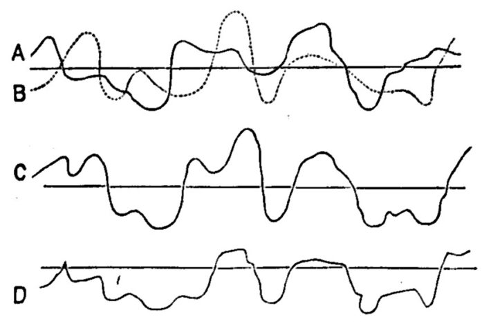
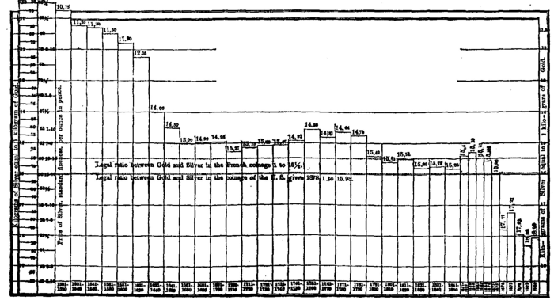
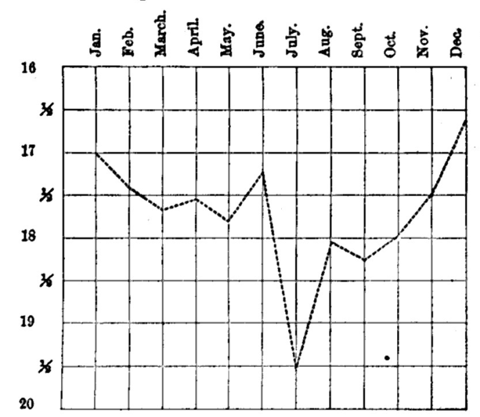

Chapter 23: Of A Double Standard And Subsidiary Coins¶
23.1 § 1. Objections to a Double Standard¶
Though the qualities necessary to fit any commodity for being used as money are rarely united in any considerable perfection, there are two commodities which possess them in an eminent and nearly an equal degree—the two precious metals, as they are called—gold and silver. Some nations have accordingly attempted to compose their circulating medium of these two metals indiscriminately.
There is an obvious convenience in making use of the more costly metal for larger payments, and the cheaper one for smaller; and the only question relates to the mode in which this can best be done. The mode most frequently adopted has been to establish between the two metals a fixed proportion [to decide by law, for example, that sixteen grains of silver should be equivalent to one grain of gold]; and it being left free to every one who has a [dollar] to pay, either to pay it in the one metal or in the other.
If [their] natural or cost values always continued to bear the same ratio to one another, the arrangement would be unobjectionable. This, however, is far from being the fact. Gold and silver, though the least variable in value of all commodities, are not invariable, and do not always vary simultaneously. Silver, for example, was lowered in permanent value more than gold by the discovery of the American mines; and those small variations of value which take place occasionally do not affect both metals alike. Suppose such a variation to take place—the value of the two metals relatively to one another no longer agreeing with their rated proportion—one or other of them will now be rated below its bullion value, and there will be a profit to be made by melting it.
Suppose, for example, that gold rises in value relatively to silver, so that the quantity of gold in a sovereign is now worth more than the quantity of silver in twenty shillings. Two consequences will ensue. No debtor will any longer find it his interest to pay in gold. He will always pay in silver, because twenty shillings are a legal tender for a debt of one pound, and he can procure silver convertible into twenty shillings for less gold than that contained in a sovereign. The other consequence will be that, unless a sovereign can be sold for more than twenty shillings, all the sovereigns will be melted, since as bullion they will purchase a greater number of shillings than they exchange for as coin. The converse of all this would happen if silver, instead of gold, were the metal which had risen in comparative value. A sovereign would not now be worth so much as twenty shillings, and whoever had a pound to pay would prefer paying it by a sovereign; while the silver coins would be collected for the purpose of being melted, and sold as bullion for gold at their real value—that is, above the legal valuation. The money of the community, therefore, would never really consist of both metals, but of the one only which, at the particular time, best suited the interest of debtors; and the standard of the currency would be constantly liable to change from the one metal to the other, at a loss, on each change, of the expense of coinage on the metal which fell out of use.
This is the operation by which is carried into effect the law of Sir Thomas Gresham (a merchant of the time of Elizabeth) to the purport that “money of less value drives out money of more value,” where both are legal payments among individuals. A celebrated instance is that where the clipped coins of England were received by the state on equal terms with new and perfect coin before 1695. They hanged men and women, but they did not prevent the operation of Gresham's law and the disappearance of the perfect coins. When the state refused the clipped coins at legal value, by no longer receiving them in payment of taxes, the trouble ceased.1 Jevons gives a striking illustration of the same law: “At the time of the treaty of 1858 between Great Britain, the United States, and Japan, which partially opened up the last country to European traders, a very curious system of currency existed in Japan. The most valuable Japanese coin was the kobang, consisting of a thin oval disk of gold about two inches long, and one and a quarter inch wide, weighing two hundred grains, and ornamented in a very primitive manner. It was passing current in the towns of Japan for four silver itzebus, but was worth in English money about 18s. 5d., whereas the silver itzebu was equal only to about 1s. 4d. [four itzebus being worth in English money 5s. 4d.]. The earliest European traders enjoyed a rare opportunity for making profit. By buying up the kobangs at the native rating they trebled their money, until the natives, perceiving what was being done, withdrew from circulation the remainder of the gold.”2
It appears, therefore, that the value of money is liable to more frequent fluctuations when both metals are a legal tender at a fixed valuation than when the exclusive standard of the currency is either gold or silver. Instead of being only affected by variations in the cost of production of one metal, it is subject to derangement from those of two. The particular kind of variation to which a currency is rendered more liable by having two legal standards is a fall of value, or what is commonly called a depreciation, since practically that one of the two metals will always be the standard of which the real has fallen below the rated value. If the tendency of the metals be to rise in value, all payments will be made in the one which has risen least; and, if to fall, then in that which has fallen most.
While liable to “more frequent fluctuations,” prices do not follow the extreme fluctuations of both metals, as some suppose, and as is shown by the following diagram.3 A represents the line of the value of gold, and B of silver, relatively to some third commodity represented by the horizontal line. Superposing these curves, C would show the line of extreme variations, while since prices would follow the metal which falls in value, D would show the actual course of variations. While the fluctuations are more frequent in D, they are less extreme than in C.

23.2 § 2. The use of the two metals as money, and the management of Subsidiary Coins¶
The plan of a double standard is still occasionally brought forward by here and there a writer or orator as a great improvement in currency.
It is probable that, with most of its adherents, its chief merit is its tendency to a sort of depreciation, there being at all times abundance of supporters for any mode, either open or covert, of lowering the standard. [But] the advantage without the disadvantages of a double standard seems to be best obtained by those nations with whom one only of the two metals is a legal tender, but the other also is coined, and allowed to pass for whatever value the market assigns to it.
When this plan is adopted, it is naturally the more costly metal which is left to be bought and sold as an article of commerce. But nations which, like England, adopt the more costly of the two as their standard, resort to a different expedient for retaining them both in circulation, namely (1), to make silver a legal tender, but only for small payments. In England no one can be compelled to receive silver in payment for a larger amount than forty shillings. With this regulation there is necessarily combined another, namely (2), that silver coin should be rated, in comparison with gold, somewhat above its intrinsic value; that there should not be, in twenty shillings, as much silver as is worth a sovereign; for, if there were, a very slight turn of the market in its favor would make it worth more than a sovereign, and it would be profitable to melt the silver coin. The overvaluation of the silver coin creates an inducement to buy silver and send it to the mint to be coined, since it is given back at a higher value than properly belongs to it; this, however, has been guarded against (3) by limiting the quantity of the silver coinage, which is not left, like that of gold, to the discretion of individuals, but is determined by the Government, and restricted to the amount supposed to be required for small payments. The only precaution necessary is, not to put so high a valuation upon the silver as to hold out a strong temptation to private coining.
23.3 § 3. The experience of the United States with a double standard from 1792 to 1883¶
The experience of the United States with a double standard, extending as it does from 1792 to 1873 without a break, and from 1878 to the present time, is a most valuable source of instruction in regard to the practical working of bimetallism. While we have nominally had a double standard, in reality we have either had one alone, or been in a transition from one to the other standard; and the history of our coinage strikingly illustrates the truth that the natural values of the two metals, in spite of all legislation, so vary relatively to each other that a constant ratio can not be maintained for any length of time; and that “the poor money drives out the good,” according to Gresham's statement. For clearness, the period may be divided, in accordance with the changes of legislation, into four divisions:
I. 1792-1834. Transition from gold to silver.
II. 1834-1853. Transition from silver to gold.
III. 1853-1878. Single gold currency (except 1862-1879, the paper period).
IV. 1878-1884. Transition from gold to silver.
I. With the establishment of the mint, Hamilton agreed upon the use of both gold and silver in our money, at a ratio of 15 to 1: that is, that the amount of pure silver in a dollar should be fifteen times the weight of gold in a dollar. So, while the various Spanish dollars then in circulation in the United States seemed to contain on the average about 371-¼ grains of pure silver, and since Hamilton believed the relative market value of gold and silver to be about 1 to 15, he put 1/15 of 371-¼ grains, or 24-¾ grains of pure gold, into the gold dollar. It was the best possible example of the bimetallic system to be found, and the mint ratio was intended to conform to the market ratio. If this conformity could have been maintained, there would have been no disturbance. But a cause was already in operation affecting the supply of one of the metals—silver—wholly independent of legislation, and without correspondingly affecting gold.
Two periods of production of silver, in which the production of silver was great relatively to gold, stand out prominently in the history of that metal. (1) One was the enormous yield from the mines of the New World, continuing from 1545 to about 1640, and (2) the only other period of great production at all comparable with it (that is, as regards the production of silver relatively to gold) was that lasting from 1780 to 1820, due to the richness of the Mexican silver-mines. The first period of ninety-five years was longer than the second, which was only forty years; yet while about forty-seven times as much silver as gold was produced on an average during the first period, the average annual amount of silver produced relatively to gold was probably a little greater from 1780 to 1820. The effect of the first period in lowering the relation of silver to gold is well recognized in the history of the precious metals (see Chart X for the fall in the value of silver relatively to gold); that the effect of the second period on the value of silver has not been greater than was actually caused—it has not been small—is explicable only by the laws of the value of money. If you let the same amount of water into a small reservoir which you let into a large one, the level of the former will be raised more than the level of the latter. The great production of the first period was added to a very small existing stock of silver; that of the second period was added to a stock increased by the great previous production just mentioned. The smallness of the annual product relatively to the total quantity existing in the world requires some time, even for a production of silver forty-seven times greater than the gold production, to take its effect on the value of the total silver stock in existence. The effect of this process was beginning to be felt soon after the United States decided on a double standard. For this reason the value of silver was declining about 1800, and, although the annual silver product fell off seriously after 1820, the value of silver continued to decline even after that time, because the increased production, dating back to 1780, was just beginning to make itself felt. Thus we have the phenomenon—which seems very difficult for some persons to understand—of a falling off in the annual production of silver, accompanied by a decrease in its value relatively to gold.
This diminishing value of silver began to affect the coinage of the United States as early as 1811, and by 1820 the disappearance of gold was everywhere commented upon. The process by which this result is produced is a simple one, and is adopted as soon as a margin of profit is seen arising from a divergence between the mint and market ratios. In 1820 the market ratio of gold to silver was 1 to 15.7—that is, the amount of gold in a dollar (24-¾ grains) would exchange for 15.7 times as many grains of silver in the market, in the form of bullion; while at the mint, in the form of coin, it would exchange for only 15 times as many grains of silver. A broker having 1,000 gold dollars could buy with them in the market silver bullion enough (1,000 × 15.7 grains) to have coined, when presented at the mint, 1,000 dollars in silver pieces, and yet have left over as a profit by the operation 700 grains of silver. So long as this can be done, silver (the cheapest money) will be presented at the mint, and gold (the dearest money) will become an article of merchandise too valuable to be used as money when the cheaper silver is legally as good. The best money, therefore, disappears from circulation, as it did in the United States before 1820, owing to the fall in the value of silver. It is to be said, that it has been seriously urged by some writers that silver did not fall, but that gold rose, in value, owing to the demand of England for resumption in 1819.4 Chronology kills this view; for the change in the value of silver began too early to have been due to English measures, even if conclusive reasons have not been given above why silver should naturally have fallen in value.

II. The change in the relative values of gold and silver finally forced the United States to change their mint ratio in 1834. Two courses were open to us: (1) either to increase the quantity of silver in the dollar until the dollar of silver was intrinsically worth the gold in the gold dollar; or (2) debase the gold dollar-piece until it was reduced in value proportionate to the depreciation of silver since 1792. The latter expedient, without any seeming regard to the effect on contracts and the integrity of our monetary standard, was adopted: 6.589 per cent was taken out of the gold dollar, leaving it containing 23.22 grains of pure gold; and as the silver dollar remained unchanged (371-¼ grains) the mint ratio established was 1 to 15.988, or, as commonly stated, 1 to 16. Did this correspond with the market ratio then existing? No. Having seen the former steady fall in silver, and believing that it would continue, Congress hoped to anticipate any further fall by making the mint ratio of gold to silver a little larger than the market ratio. This was done by establishing the mint ratio of 1 to 15.988, while the market ratio in 1834 was 1 to 15.73. Here, again, appeared the difficulty arising from the attempt to balance a ratio on a movable fulcrum. It will be seen that the act of 1834 set at work forces for another change in the coinage—forces of a similar kind, but working in exactly the opposite direction to those previous to 1834. A dollar of gold coin would now exchange for more grains of silver at the mint (15.98) than it would in the form of bullion in the market (15.73). Therefore it would be more profitable to put gold into coin than exchange it as bullion. Gold was sent to the mint, while silver began to be withdrawn from circulation, silver now being more valuable as bullion than as coin. By 1840 a silver dollar was worth 102 cents in gold.5 This movement, which was displacing silver with gold, received a surprising and unexpected impetus by the gold discoveries of California and Australia in 1849, before mentioned, and made gold less valuable relatively to silver, by lowering the value of gold. Here, again, was another natural cause, independent of legislation, and not to be foreseen, altering the value of one of the precious metals, and in exactly the opposite direction from that in the previous period, when silver was lowered by the increase from the Mexican mines. In 1853 a silver dollar was worth 104 cents in gold (i.e., of a gold dollar containing 23.22 grains); but, some years before, all silver dollars had disappeared from use, and only gold was in circulation. For a large part of this period we had in reality a single standard of gold, the other metal not being able to stay in the currency.
III. After our previous experience, the impossibility of retaining both metals in the coinage together, on equal terms, now came to be generally recognized, and was accepted by Congress in the legislation of 1853. This act made no further changes intended to adapt the mint to the market ratios, but remained satisfied with the gold circulation. But hitherto no regard had been paid to the principles on which a subsidiary coinage is based, as explained by Mr. Mill in the last section (§ 2). The act of 1853, while acquiescing in the single gold standard, had for its purpose the readjustment of the subsidiary coins, which, together with silver dollar-pieces, had all gone out of circulation. Before this, two halves, four quarters, or ten dimes contained the same quantity of pure silver as the dollar-piece (371-¼ grains); therefore, when it became profitable to withdraw the dollar-pieces and substitute gold, it gave exactly the same profit to withdraw two halves or four quarters in silver. For this reason all the subsidiary silver had gone out of circulation, and there was no “small change” in the country. The legislation of 1853 rectified this error: (1) by reducing the quantity of pure silver in a dollar's worth of subsidiary coin to 345.6 grains. By making so much less an amount of silver equal to a dollar of small coins, it was more valuable in that shape than as bullion, and there was no reason for melting it, or withdrawing it (since even if gold and silver changed considerably in their relative values, 345.6 grains of silver could not easily rise sufficiently to become equal in value to a gold dollar, when 371-¼ grains were worth only 104 cents of the gold dollar); (2) this over-valuation of silver in subsidiary coin would cause a great flow of silver to the mint, since silver would be more valuable in subsidiary coin than as bullion; but this was prevented by the provision (section 4 of the act of 1853) that the amount or the small coinage should be limited according to the discretion of the Secretary of the Treasury; and, (3) in order that the overvalued small coinage might not be used for purposes other than for effecting change, its legal-tender power was restricted to payments not exceeding five dollars. This system, a single gold standard for large, and silver for small, payments, continued without question, and with great convenience, until the days of the war, when paper money (1862-1879) drove out (by its cheapness, again) both gold and silver. Paper was far cheaper than the cheapest of the two metals.

The mere fact that the silver dollar-piece had not circulated since even long before 1853 led the authorities to drop out the provisions for the coinage of silver dollars and in 1873 remove it from the list of legal coins (at the ratio of 1 to 15.98, the obsolete ratio fixed as far back as 1834). This is what is known as the “demonetization” of silver. It had no effect on the circulation of silver dollars, since none were in use, and had not been for more than twenty-five years. There had been no desire up to this time to use silver, since it was more expensive than gold; indeed, it is somewhat humiliating to our sense of national honor to reflect that it was not until silver fell so surprisingly in value (in 1876) that the agitation for its use in the coinage arose. When a silver dollar was worth 104 cents, no one wanted it as a means of liquidating debts; when it came to be worth 86 cents, it was capable of serving debtors even better than the then appreciating greenbacks. Thus, while from 1853 (and even before) we had legally two standards, of both gold and silver, but really only one, that of gold, from 1873 to 1878 we had both legally and really only one standard, that of gold.
It might be here added, that I have spoken of the silver dollar as containing 371-¼ grains of pure silver. Of course, alloy is mixed with the pure silver, sufficient, in 1792, to make the original dollar weigh 416 grains in all, its “standard” weight. In 1837 the amount of alloy was changed from 1/12 to 1/10 of the standard weight, which (as the 371-¼ grains of pure silver were unchanged) gave the total weight of the dollar as 412-½ grains, whence the familiar name assigned to this piece. In 1873, moreover, the mint was permitted to put its stamp and devices—to what was not money at all, but a “coined ingot”—on 378 grains of pure silver (420 grains, standard), known as the “trade-dollar.” It was intended by this means to make United States silver more serviceable in the Asiatic trade. Oriental nations care almost exclusively for silver in payments. The Mexican silver dollar contained 377-¼ grains of pure silver; the Japanese yen, 374-4/10; and the United States dollar, 371-¼. By making the “trade-dollar” slightly heavier than any coin used in the Eastern world, it would give our silver a new market; and the United States Government was simply asked to certify to the fineness and weight by coining it, provided the owners of silver paid the expenses of coinage. Inadvertently the trade-dollar was included in the list of coins in the act of 1873 which were legal tender for payments of five dollars, but, when this was discovered, it was repealed in 1876. So that the trade-dollar was not a legal coin, in any sense (although it contained more silver than the 412-½-grains dollar). They ceased to be coined in 1878, to which time there had been made $35,959,360.
IV. In February, 1878, an indiscreet and unreasonable movement induced Congress to authorize the recoinage of the silver dollar-piece at the obsolete ratio of 1834 (1 to 15.98), while the market ratio was 1 to 17.87. So extraordinary a reversal of all sound principles and such blindness to our previous experience could be explained only by a desire to force this country to use a silver coinage only, and had its origin with the owners of silver-mines, aided by the desires of debtors for a cheap unit in which to absolve themselves from their indebtedness. There was no pretense of setting up a double standard about it; for it was evident to the most ignorant that so great a disproportion between the mint and market ratios must inevitably lead to the disappearance of gold entirely. This would happen, if owners could bring their silver freely, in any amounts, to the mint for coinage (“Free Coinage”), and so exchange silver against gold coin for the purpose of withdrawing gold, since gold would exchange for less as coin than as bullion. This immediate result was prevented by a provision in the law, which prevented the “free coinage” of silver, and required the Government itself to buy silver and coin at least $2,000,000 in silver each month. This retarded, but will not ultimately prevent, the change from the present gold to a single silver standard. At the rate of $24,000,000 a year, it is only a question of time when the Treasury will be obliged to pay out, for its regular disbursements on the public debt, silver in such amounts as will drive gold out of circulation. In February, 1884, it was feared that this was already at hand, and was practically reached in the August following. Unless a repeal of the law is reached very soon, the uncomfortable spectacle will be seen of a gradual disarrangement of prices, and consequently of trade, arising from a change of the standard.
In order that the alternate movements of silver and gold to the mint for coinage may be seen, there is appended a statement of the coinage6 during the above periods, which well shows the effects of Gresham's law.
| Ratio in the mint and in the market. | Period. | Gold coinage. | Silver dollars coined. |
|---|---|---|---|
| 1:15 (silver lower in market) | 1792-1834 | $11,825,890 | $36,275,077 |
| 1:15.98 (gold lower in market) | 1834-1853 | 224,965,730 | 42,936,294 |
| 1:15.98 (gold lower in market) | 1853-1873 | 544,864,921 | 5,538,948 |
| Single gold standard. | 1873-1878 | 166,253,816 | ........ |
| 1:15.98 (silver lower, but no free coinage) | 1878-1883 | 354,019,865 | 147,255,899 |
From this it will be seen that there has been an enforced coinage by the Treasury, of almost twice as many silver dollars since 1878 as were coined in all the history of the mint before, since the establishment of the Government.
It may, perhaps, be asked why the silver dollar of 412-½ grains, being worth intrinsically only from 86 to 89 cents, does not depreciate to that value. The Government buys the silver, owns the coin, and holds all that it can not induce the public to receive voluntarily; so that but a part of the total coinage is out of the Treasury. And most of the coins issued are returned for deposit and silver certificates received in return. There being no free coinage, and no greater amount in circulation than satisfies the demand for change, instead of small bills, the dollar-pieces will circulate at their full value, on the principle of subsidiary coin, even though overvalued. And the silver certificates practically go through a process of constant redemption by being received for customs dues equally with gold. When they become too great in quantity to be needed for such purposes, then we may look for the depreciation with good reason.7
There are, then, the following kinds of legal tender in the United States in 1884: (1) Gold coins (if not below tolerance); (2) the silver dollar of 412-½ grains; (3) United States notes (except for customs and interest on the public debt); (4) subsidiary silver coinage, to the amount of five dollars; and (5) minor coins, to the amount of twenty-five cents.
The question of a double standard has provoked no little vehement discussion and has called forth a considerable literature since the fall of silver in 1876. A body of opinion exists, best represented in this country by F. A. Walker and S. D. Horton, that the relative values of gold and silver may be kept unchanged, in spite of all natural causes, by the force of law, which, provided that enough countries join in the plan, shall fix the ratio of exchange in the coinage for all great commercial countries, and by this means keep the coinage ratio equivalent to the bullion ratio. The difficulty with this scheme, even if it were wholly sufficient, has thus far been in the obstacles to international agreement. After several international monetary conferences, in 1867, 1878, and 1881, the project seems now to have been practically abandoned by all except the most sanguine. (For a fuller list of authorities on bimetallism, see Appendix I.)
-
See Macaulay, “History of England,” chap. xxi. ↩
-
“Money and the Mechanism of Exchange,” p. 84. ↩
-
Jevons, ibid., p. 138. ↩
-
See S. Dana Horton, “Gold and Silver,” 1877, p. 84, et seq. ↩
-
See Linderman, “Money and Legal Tender,” p. 161. ↩
-
Director of the Mint, Report, 1883, p. 49, and Linderman, ibid., p. 173. ↩
-
See “Atlantic Monthly,” “The Silver Danger,” May, 1884. ↩